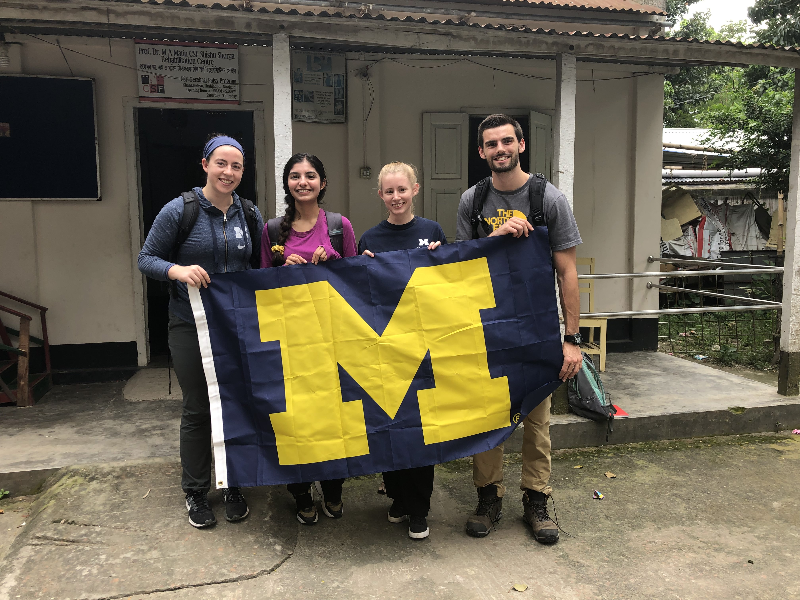
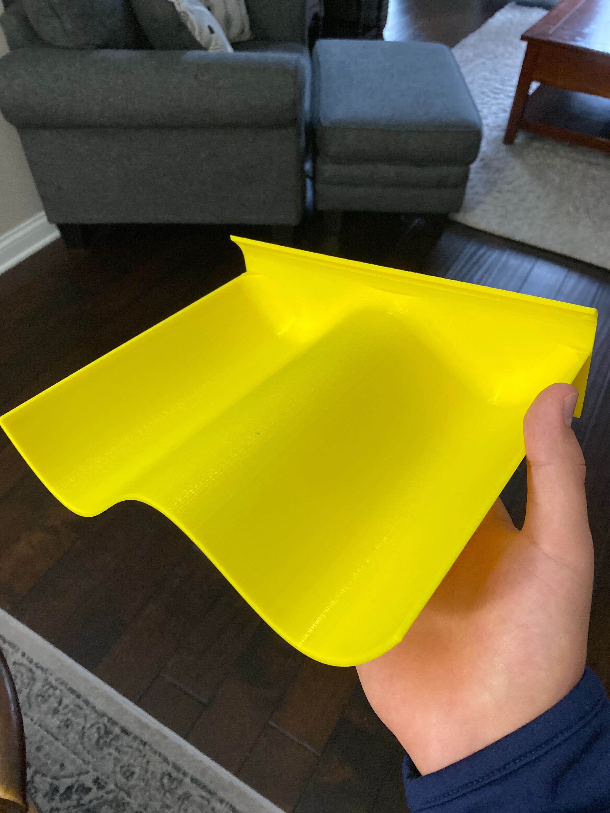
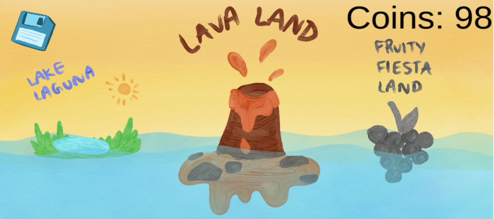
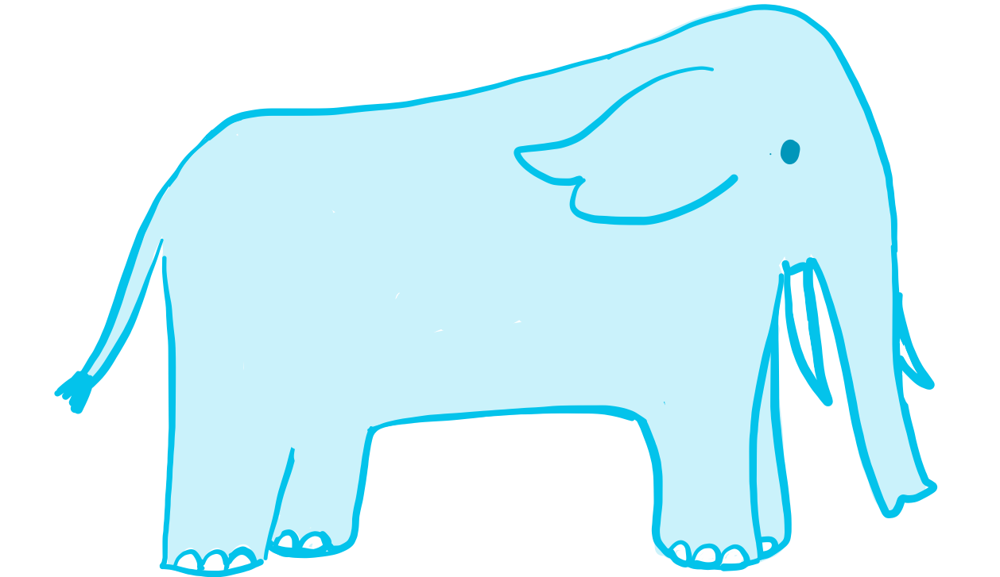

CSF Global Partnership
I am currently a project lead (along with the amazing Julia Ring) for
CSF Global Partnership, a student-run project team.
Our team formed when Dr. Tasneem Karim, a researcher at an NGO,
CSF Global reached out to collaborate on a project
that aims to empower children with Cerebral Palsy in Bangladesh. We conducted a
needs assessment in Sirajganj, Bangladesh in Summer 2019 to better understand the day to
day challenges faced by children with Cerebral Palsy and their caregivers. Leading up to this we spent most of our time understanding
Cerebral Palsy, existing assistive technologies and therapy for it and the culture of Bangladesh. We met with Bangladeshi nutrition
experts such as Dr. Khurshid Talukder and Moushumi Khan, who is a UofM alumna and runs the NGO Foundation for Charitable
Activities in Bangladesh (FCAB), before and during our needs assessment trip to gain more insights into the challenges and how we can make our future intervention effective.
Several families mentioned difficulty feeding their child and that their child was unable to feed themselves.
We also observed mothers feeding their children during therapy sessions, instead of the child working to feed
themselves. Children with Cerebral palsy also have a higher incidence of malnutrition because they have difficulty
chewing and swallowing. Improving a child’s ability to self-feed will help to establish their independence and also
improve their upper extremity motor function, which will be applicable to other areas of life.
This is why our team decided to focus on alleviating the childrens’ feeding and nutritional problems.
Currently we have an education subteam and an assistive device subteam.
The education subteam is working to create an information booklet that allows caregivers to easily access posture tips,
ways to modify the texture of food and recipes for affordable food that is best suited for children
who have Cerebral palsy. Whereas the assistive device subteam is working to create an assistive plate and glove
that makes it easier for children with Cerebral palsy to feed independently.
The Spirelephant
My teammates and I created the Spirelephant as part of EECS 495: Software for Access. After surgery, the alveoli
in the lungs of patients close up, which is why doctors recommend that they do breathing exercises using a device
called a spirometer. But patients often do not do these exercises because it feels too monotonous and doctors do not
have any way of checking up on them. This problem is worse for young children who may get bored easily. Enter: the Spirelephant!
It uses the patients' breaths as input to the game to control the on screen character Elly the elephant who completes various
tasks to help out her animal friends. I had a lot of fun creating the art for the game!



